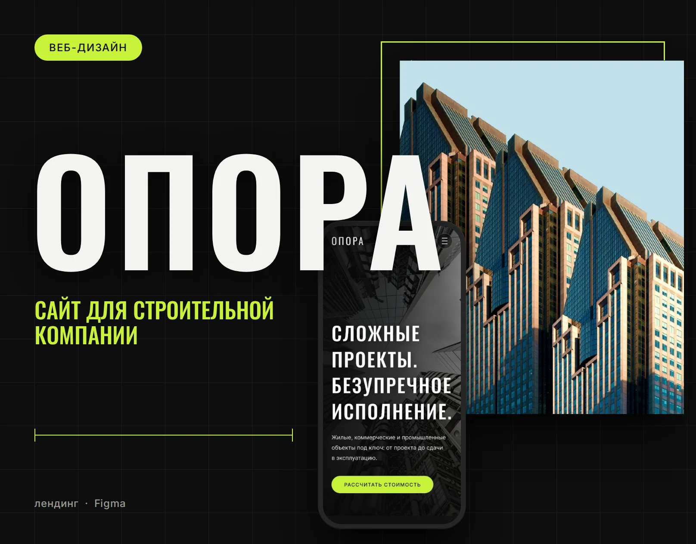
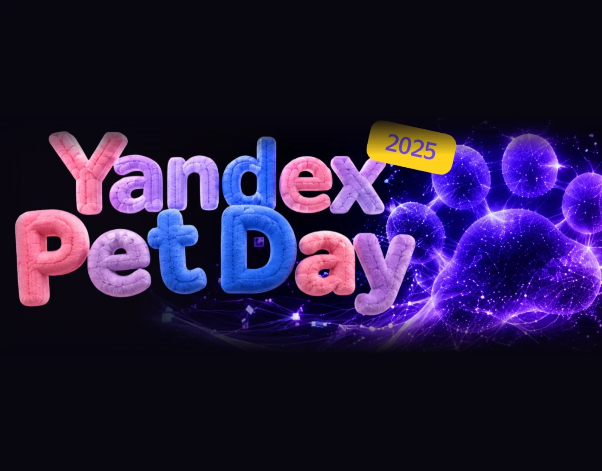
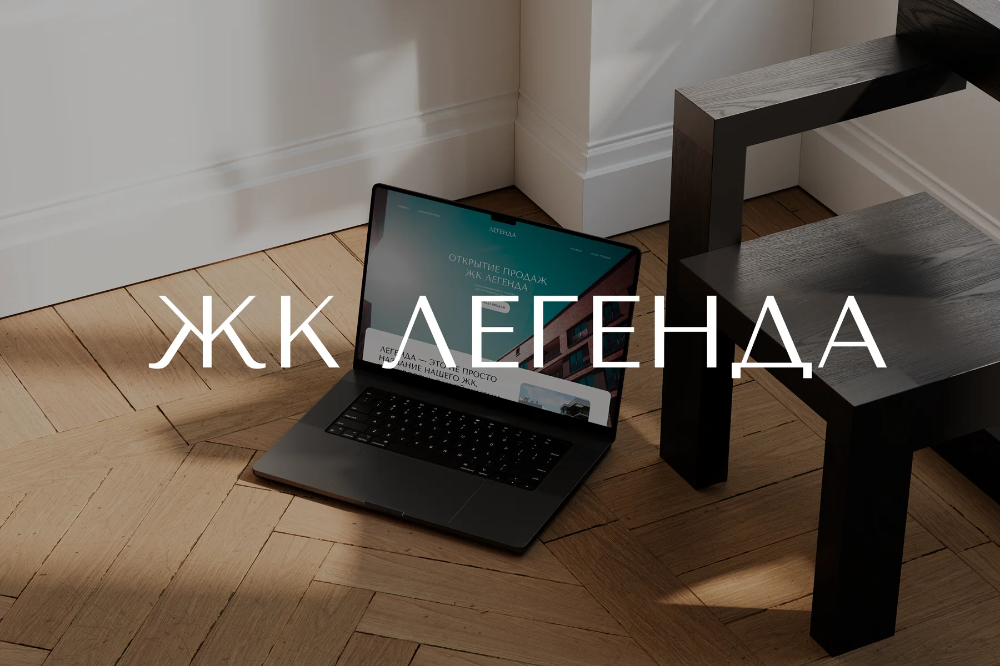
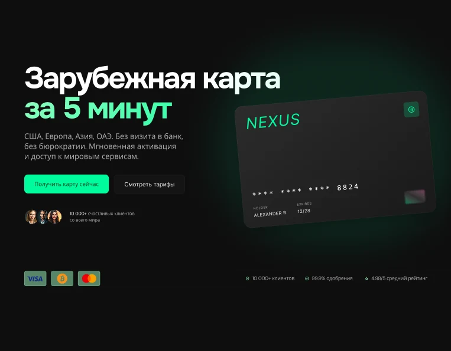

ДмитрийПрокофьев
Веб-дизайнер из Санкт-Петербурга. Проектирую интерфейсы и создаю сайты: от анализа задачи до готовых макетов.
практики на фриланс-проектах
Мои работы
Нажмите на карточку, чтобы открыть кейс целиком.

Опора
Сайт под ключ для девелопера
Travel.Enjoy
Сайт под ключ для турагентства
BeachHub
Приложение под ключ и дизайн по гайдбуку

Yandex Pet Day
Сайт под ключ для мероприятия Яндекса

ЖК Легенда
Сайт под ключ для строительной компании
Clam
Сайт под ключ для студии йоги

Nexus
Сайт под ключ для подключения зарубежных карт
Привет, я Дмитрий
Профессиональный профиль
Веб-дизайнер с фокусом на UX/UI, проектирование интерфейсов и создание сайтов. Последние 2 года разрабатываю фриланс-проекты: от анализа задачи, структуры и прототипирования до визуального дизайна и подготовки макетов.
Сильная сторона — продуктово-аналитический бэкграунд. Умею связывать визуальное решение с бизнес-целями, пользовательскими сценариями, конверсией, ограничениями разработки и ожиданиями стейкхолдеров.
Как строится работа над проектом
- 1Анализ задачи
- 2Структура
- 3Прототипирование
- 4Визуальный дизайн
- 5Подготовка макетов
Дизайн и UX/UI
- веб-дизайн
- UX/UI design
- дизайн сайтов
- лендинги
- адаптивный дизайн
- прототипирование
- wireframes
- user flow
- пользовательские сценарии
- информационная архитектура
- визуальная композиция
- типографика
- UI kit
- подготовка макетов к передаче в разработку
Инструменты
- Figma
- Adobe Photoshop
- Adobe Illustrator
- Adobe After Effects
- Adobe InDesign
- MS PowerPoint
- MS Excel
LLM
- ChatGPT
- Gemini
- Recraft
- Claude
Продукт и аналитика
- анализ ЦА и конкурентов
- сбор и структурирование требований
- работа с обратной связью
- продуктовая логика
- бизнес-метрики
- презентация решений стейкхолдерам
продуктовой аналитики
инструментов в работе, включая нейросети
Давайте познакомимся
Увидели моё портфолио и хотите обсудить вакансию или проект? Напишите мне или скачайте резюме.